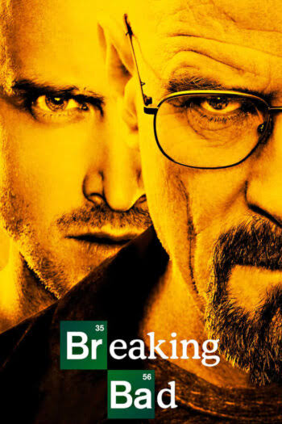
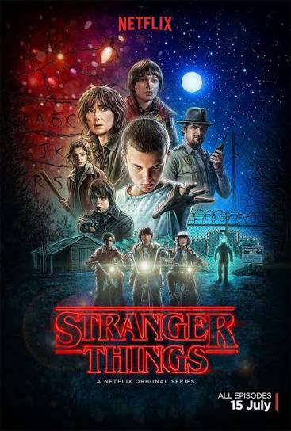
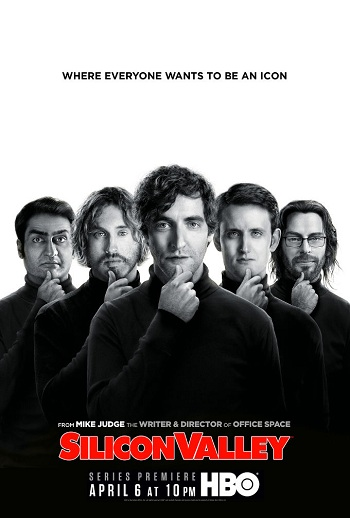

Подборка известных сериалов разных жанров и стран.
  
«Во все тяжкие» - драматический криминальный сериал о школьном учителе химии Уолтере Уайте, который после тяжелого диагноза начинает производить метамфетамин вместе со своим бывшим учеником. Сериал рассказывает о последствиях принятых решений, изменении характера человека и цене преступлений.
Перейти к подробному описанию сериала
«Очень странные дела» - фантастический сериал о группе подростков из небольшого американского города. После исчезновения мальчика герои сталкиваются с необычными явлениями, секретными экспериментами и параллельным измерением.
«Кремниевая долина» (Silicon Valley) - комедийный сериал о программисте Ричарде Хендриксе, который вместе с друзьями пытается создать успешный технологический стартап. После разработки уникального алгоритма сжатия данных Ричард оказывается в центре борьбы инвесторов и крупных компаний за его проект. Сериал рассказывает о мире стартапов, конкуренции в сфере технологий и трудностях, с которыми сталкиваются начинающие предприниматели.
Посмотреть таблицу всех сериалов